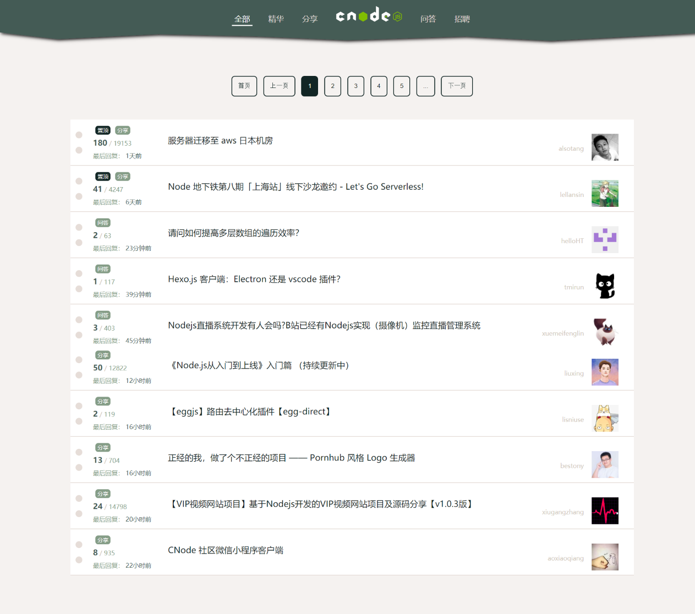

项目经历
Wheels-mmr UI
- 项目介绍：该项目是参照 Framework7、Ant Design、Element UI、iView 等 UI 库思路，做的一个基于 Vue 的简易 UI 组件库，目前已支持按钮、输入框、网格、布局、Toast、Tabs、Popover、手风琴等组件。每个组件均经历从需求分析到 Mocha 单元测试完成该项目使我对 Vue 的常用特征更加熟悉，同时提升了自己对前端工程化流程以及单元测试重要性的深刻理解，近一步拥抱开源文化。
- 技术：Vue.js/ ES6/ vue/cli3 / Npm Scripts/ Mocha/ SCSS
- 项目源码：github.com/Mmmmmr/wheel-mmr
- 浏览链接：
CNode 社区
- 项目介绍：该项目使用 Vue 还原 CNode 官方社区，项目调用 CNode 官方社区提供的 API，以 Vue CLI 创建项目模版，使用 Axios 获取数据，使用 Vue Router 进行前端路由的切换及传参，使用 watch 监听路由的变化，Webpack 打包。
- 技术栈：Vue CLI/ Vue2/ Vue Router/ Axios/ ES6/ Npm/ SCSS
- 项目源码：github.com/Mmmmmr/vue-cnode
- 浏览链接：mmmmmr.github.io/vue-cnode
小程序：YoogoT翻译

- 项目介绍：一款提供翻译功能的微信小程序。该项目以百度翻译 API 为服务器域名提供支持，主要包含翻译首页、语言列表页和翻译历史页。项目逻辑简单，页面清新，提供了近 20 种语言选择，欢迎尝试。
- 项目源码：github.com/Mmmmmr/mp-translation
- 浏览项目：微信搜索小程序——YoogoT翻译或扫描示例图（PDF 版本不显示）中二维码
简易在线画板

- 项目介绍：是一个使用纯原生 JS 开发的，主要利用 HTML 5 的 Canvas API ，是我在学习原生 JS 及 Canvas 过程中开发的小工具。 其提供在 PC 及手机端在线画画、橡皮擦、画笔调色、画作删除等功能，并支持画作下载。
- 项目源码：mmmmmr.github.io/Canvas-mmm/
- 浏览链接：mmmmmr.github.io/Canvas-mmm/
关于我
熟练 HTML、DIV + CSS 的页面布局，能根据设计图像素级完成页面制作
熟悉 HTML 5 及语义化，了解 Canvas 动画制作，掌握 CSS 3 动画、过渡效果等常用技术熟悉原生 JavaScript，会使用 ES6+ 常用规范，了解 TypeScript，了解 jQuery 常用 API 及思想
熟悉 Vue 常用功能，理解如生命周期、组件、虚拟 DOM、数据响应式等概念，能够使用 Vue 全家桶开发项目
熟悉模块化、工程化开发流程，能够配置 Webpack
有移动端开发经验，会使用REM、vw/ vh、响应式 等技术制作适配手机设备的页面
了解 HTTP 相关知识，了解常见的 Web 性能优化方案
了解 Node.js，能够开发简单的后台服务器
熟练使用 VsCode、WebStorm、Sass、Git 等开发工具
个人经历
2017 年 7
月毕业于湖南城市学院，在校期间成绩优异，曾多次获奖学金。
毕业后就湖南省第四工程有限公司，从事本科时就读的土木工程专业相关工作。
工作期间接触了前端，发现自己热爱技术，迄今为止利用所有业余时间自学前端近一年。
热爱 coding，享受调试代码及解决 bug
的过程，享受通过各种代码组合实现自己成果的过程。有良好的代码规范，热衷分享，崇尚开源文化。